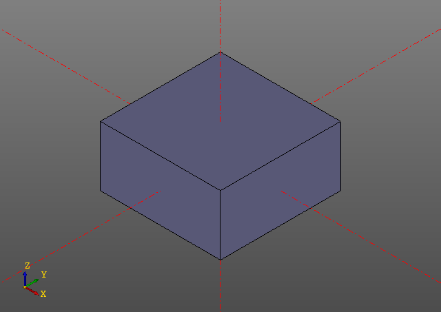

CSG Примитивы
Box
box(x, y, z, center = True/False);
box(size = (x,y,z), center = True/False);
box(size = x, center = True/False);Example:
zencad.box(size = [20, 20, 10], center = True)
Sphere
sphere(r = radius)Example:
zencad.sphere(r = 10)
Cylinder
cylinder(r = radius, h = height, center = True/False);Example:
zencad.cylinder(r = 10, h = 20)
Cone
cone(r1 = botRadius, r2 = topRadius, h = height, center = True/False);Example:
zencad.cone(r1 = 20, r2 = 10, h = 20, center = True)
Torus
torus(r1 = centralRadius, r2 = localRadius);Example:
zencad.torus(r1 = 10, r2 = 3);